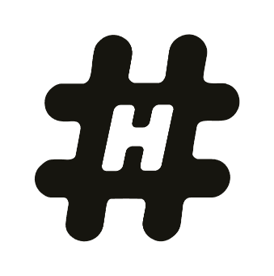
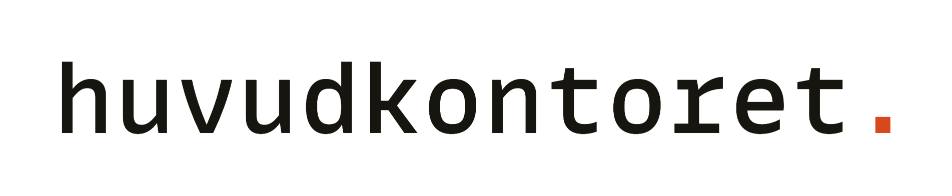

Sidan är för press, kunder, partners, byråer och tryckerier. Allt som behövs ligger i ett paket: sigill, ordbild och de två låsta kombinationerna, i två färglägen, som SVG och PNG. Filerna används som de är. Ingenting sätts om på plats.




Använd SVG där det går. PNG finns för Word, Powerpoint och ytor som inte tar vektor: välj graden som är större än ytan du ska fylla, aldrig mindre. Frizonen ligger inbakad som transparent kant. Beskär inte.
Filerna bär redan rätt färg. Hex-koderna är för ytan runt märket, inte för att färga om det. Ligger sidan mörk, använd -papper. Ligger den ljus, använd -black. Är botten orolig, foto eller kulör, använd den kvadratiska filen med egen yta. Fler färger finns i profilen men används bara av oss.
Ordbilden är satt i MonoLisa. Licensen är per användare och får inte vidaredistribueras, alltså ligger ingen font i paketet. Du behöver inte sätta ordbilden själv. Den finns redan som fil, använd den.
Skriver du om oss i din egen text gäller bara en regel: huvudkontoret med liten bokstav, även först i meningen. Huvudkontoret Norr AB är den juridiska personen och används bara där den menas.
Fråga innan du gissar. Behöver du en fil som inte finns i paketet gör vi den, du ska inte behöva bygga den själv.